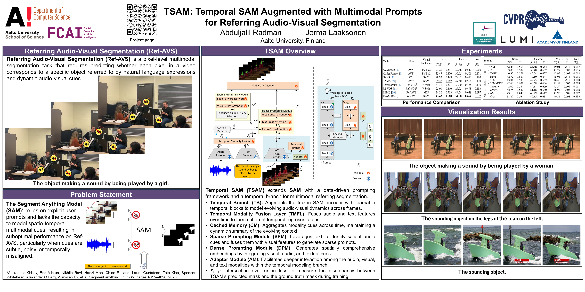

Pipeline
An overview of the proposed framework is illustrated in the figure below.

Details can be found in the paper.
Referring audio-visual segmentation (Ref-AVS) aims to segment objects within audio-visual scenes using multimodal cues embedded in text expressions. While the Segment Anything Model (SAM) has revolutionized visual segmentation, its applicability to Ref-AVS, where multimodal cues act as novel prompts, remains unexplored. SAM’s limitation to single-frame segmentation also hinders its ability to capture essential temporal context needed for multi-frame audio-visual segmentation. To address this gap, we propose TSAM, a novel extension of SAM designed to leverage multimodal cues for precise segmentation in dynamic audio-visual scenes. TSAM enhances SAM’s image encoder with a temporal modeling branch, enabling spatio-temporal learning and deep multimodal fusion across video frames, while retaining SAM’s pre-trained knowledge. Additionally, TSAM replaces SAM’s user-interactive prompting mechanism with sparse and dense data-driven prompts, enabling more effective integration of audio-visual inputs and reference text expressions. Extensive experiments on the Ref-AVS dataset demonstrate TSAM’s superiority over state-of-the-art methods. The results illustrate its effectiveness in segmenting objects in dynamic audio-visual scenes using text-based multimodal cues and its strong generalization to unseen objects.
An overview of the proposed framework is illustrated in the figure below.
Details can be found in the paper.
We evaluated TSAM on the Ref-AVS dataset, which contains 20,000 text expressions with pixel-level masks across 4,000 10-second videos, covering diverse audible and inaudible objects. It includes 2,908 training, 276 validation, and 818 test videos. The test set is split into Seen (292), Unseen (269), and Null (257) subsets to test generalization and robustness. As shown in the Table 1, TSAM outperforms existing methods, especially on the Unseen subset, demonstrating strong generalization to novel objects.
| Method | Task | Visual Backbone | Seen | Unseen | Null | ||
|---|---|---|---|---|---|---|---|
| 𝒥(%) | 𝒜ℱ | 𝒥(%) | 𝒜ℱ | 𝒮(↓) | |||
| AVSBench | AVS† | PVT-v2 | 23.20 | 0.511 | 32.36 | 0.547 | 0.208 |
| AVSegFormer | AVS† | PVT-v2 | 33.47 | 0.470 | 36.05 | 0.501 | 0.171 |
| GAVS | AVS† | SAM | 28.93 | 0.498 | 29.82 | 0.497 | 0.190 |
| SAMA | AVS* | SAM | 39.22 | 0.562 | 47.50 | 0.566 | 0.130 |
| ReferFormer | Ref-VOS‡ | V-Swin | 31.31 | 0.501 | 30.40 | 0.488 | 0.176 |
| R2-VOS | Ref-VOS‡ | V-Swin | 25.01 | 0.410 | 27.93 | 0.498 | 0.183 |
| EEMC | Ref-AVS | M2F | 34.20 | 0.513 | 49.54 | 0.648 | 0.007 |
| TSAM (Ours) | Ref-AVS | SAM | 43.43 | 0.568 | 54.58 | 0.664 | 0.017 |
We further conducted an ablation study (Table 2) to assess the impact of each module (see the pipeline above): the temporal branch (TB), temporal modality fusion layer (TMFL), dense (DPM) and sparse (SPM) prompting modules, cached memory (CM) for audio+visual (a+v) or visual (v) only, adapter module (AM), and the LIoU loss. Each contributes to TSAM’s robust performance, especially on unseen and null cases.
| Setting | Seen | Unseen | Mix (S+U) | Null | |||||
|---|---|---|---|---|---|---|---|---|---|
| 𝒥(%) | 𝒜ℱ | 𝒥(%) | 𝒜ℱ | 𝒥(%) | 𝒜ℱ | 𝒮(↓) | |||
| ① TSAM | 43.43 | 0.568 | 54.58 | 0.664 | 49.01 | 0.616 | 0.017 | ||
| ② - TB | 33.05 | 0.507 | 50.48 | 0.657 | 41.77 | 0.582 | 0.505 | ||
| ③ - TMFL | 40.35 | 0.579 | 45.54 | 0.627 | 42.95 | 0.603 | 0.018 | ||
| ④ - DPM | 42.72 | 0.580 | 49.10 | 0.647 | 45.91 | 0.614 | 0.018 | ||
| ⑤ - SPM | 43.04 | 0.580 | 49.75 | 0.652 | 46.40 | 0.616 | 0.018 | ||
| ⑥ - SPM+DPM | 42.60 | 0.602 | 40.58 | 0.604 | 41.59 | 0.603 | 0.018 | ||
| ⑦ - CM(a+v) | 42.07 | 0.544 | 49.11 | 0.659 | 45.59 | 0.602 | 0.018 | ||
| ⑧ - CM(v) | 42.75 | 0.549 | 51.18 | 0.660 | 46.97 | 0.605 | 0.018 | ||
| ⑨ - AM | 43.13 | 0.600 | 40.79 | 0.617 | 41.96 | 0.609 | 0.017 | ||
| ⑩ - 𝓛IoU | 38.29 | 0.564 | 42.15 | 0.631 | 40.22 | 0.598 | 0.008 | ||
[]

@InProceedings{Radman_2025_CVPR,
author = {Radman, Abduljalil and Laaksonen, Jorma},
title = {TSAM: Temporal SAM Augmented with Multimodal Prompts for Referring Audio-Visual Segmentation},
booktitle = {Proceedings of the Computer Vision and Pattern Recognition Conference (CVPR)},
month = {June},
year = {2025},
pages = {23947-23956}
}